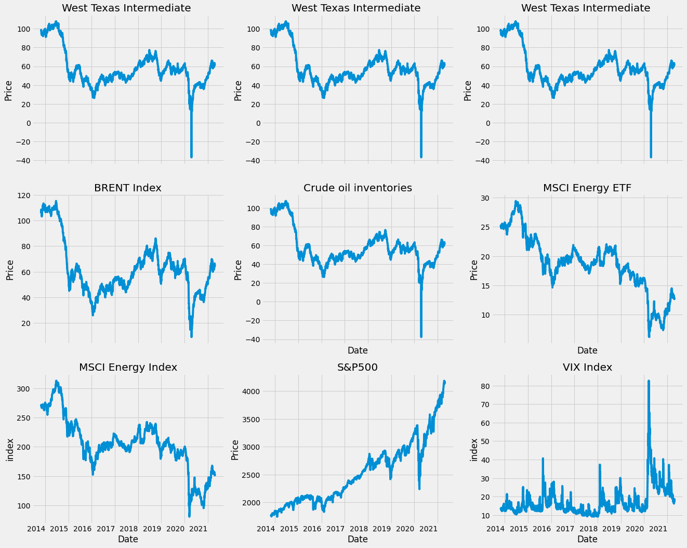
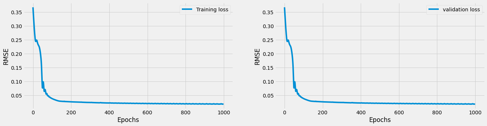
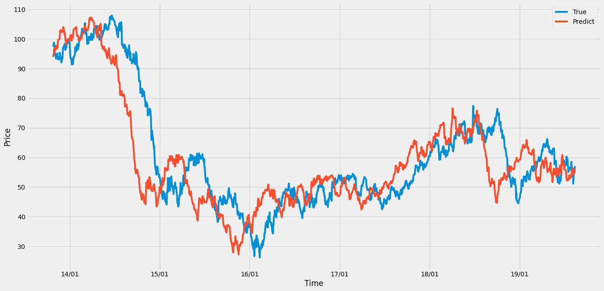
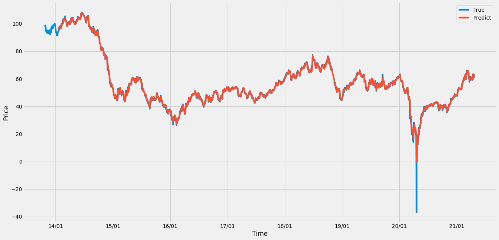

Oil Price WTI Predict by LSTM and TCN model#
Predicting WTI index using LSTM 2021/06/31
Summary
Oil is a non-renewable energy source and plays an important role in economic development. In the issue of predicting oil prices, the ARIMA model in traditional econometric method can already make the model have good accuracy. However, using deep learning to process time series data have gradually emerged. Deep learning can avoids many of the limitations of traditional statistics. In addition, since we only care about the accuracy of the model, not the causal effect between variables, the use of deep learning to make predictions may perform better than tranditional regression models. This project will use deep learning methods TCN and LSTM for crude oil price(WTI) prediction.
TCN
Temporal Convolution Network, TCN. Using CNN technology to process time series data. There are three kinds of volume base layers, the first is one-dimensional CNN, which is used to input data, the second is causal convolution, which can handle the sequence problem of time series, and the third is dilated convolution, which can slowly expand the convolution range, increasing the amount of data considered. In addition, CNN has the function of parallel operation, so the training speed is also faster than RNN.
LSTM
The long-term and short-term memory model belongs to the recurrent neural network. The RNN LSTM model will consider the value of the previous input to weight the next input before outputting. The LSTM has memory nodes, which are responsible for memorizing or forgetting historical information, so it is suitable for time series data.
Data From January 2014 to June 2021 Data size : 1868
Dependent variable West Texas Intermediate
Independent variable
West Texas Intermediate (sixty days ago)
BRENT Index
Crude oil inventories
MSCI Energy ETF
S&P500
VIX Index

Model LSTM - Hyper parameter
look_back = 60
#-------for networks--------------#
hidden_feature_dim = 32
hidden_layer_num = 2
classes_num = 1
dropout = 0.01
bidirectional = False
batch_first = True
#-------for training--------------#
learning_rate = 0.001
epoch = 1000
result
*Validation RMSE Loss = 0.0492

Model TCN - Hyper parameter
#-------for networks--------------#
look_back_windows = 5
kernel_size = 2
dropout = 0.2
#-------for training--------------#
learning_rate = 0.001
epoch = 1000
result
*Validation RMSE Loss = 0.0475

RMSE Training Loss

import numpy as np
import pandas as pd
import matplotlib.pyplot as plt
import torch
import torch.optim as optim
import torch.nn as nn
import warnings
warnings.filterwarnings("ignore")
%matplotlib inline
from torch.utils.data import TensorDataset
from torch.utils.data import DataLoader
import matplotlib.dates as mdates
device = 'cuda' if torch.cuda.is_available() else 'cpu'
print('Using {} device'.format(device))
Using cuda device
# !gdown --id '1RBb1EQIwCAv1c0J0TBrGvnF4t_oaiHq6' --output orgdata.csv
!gdown --id '1sBOT4cDsl8bLuaz4bZapUbTV0OeijAAc' --output orgdata.csv #new
# 使用顯卡型號
# K80 < P4 < T4 < P100 <= T4(fp16) < V100
!nvidia-smi
Downloading...
From: https://drive.google.com/uc?id=1sBOT4cDsl8bLuaz4bZapUbTV0OeijAAc
To: /content/orgdata.csv
0% 0.00/132k [00:00<?, ?B/s]
100% 132k/132k [00:00<00:00, 51.0MB/s]
Thu Jun 10 02:10:57 2021
+-----------------------------------------------------------------------------+
| NVIDIA-SMI 465.27 Driver Version: 460.32.03 CUDA Version: 11.2 |
|-------------------------------+----------------------+----------------------+
| GPU Name Persistence-M| Bus-Id Disp.A | Volatile Uncorr. ECC |
| Fan Temp Perf Pwr:Usage/Cap| Memory-Usage | GPU-Util Compute M. |
| | | MIG M. |
|===============================+======================+======================|
| 0 Tesla P100-PCIE... Off | 00000000:00:04.0 Off | 0 |
| N/A 37C P0 27W / 250W | 2MiB / 16280MiB | 0% Default |
| | | N/A |
+-------------------------------+----------------------+----------------------+
+-----------------------------------------------------------------------------+
| Processes: |
| GPU GI CI PID Type Process name GPU Memory |
| ID ID Usage |
|=============================================================================|
| No running processes found |
+-----------------------------------------------------------------------------+
前處理#
import random
import numpy as np
def same_seeds(seed):
# Python built-in random module
random.seed(seed)
# Numpy
np.random.seed(seed)
# Torch
torch.manual_seed(seed)
if torch.cuda.is_available():
torch.cuda.manual_seed(seed)
torch.cuda.manual_seed_all(seed)
torch.backends.cudnn.benchmark = False
torch.backends.cudnn.deterministic = True
same_seeds(36544)
path = 'orgdata.csv'
features = pd.read_csv(path)
features
| Unnamed: 0 | 日期 | 標普500 | 西德州 | 布蘭特原油 | 原油庫存 | MSCI能源ETF價格 | 世界能源指數 | VIX恐慌指数 | |
|---|---|---|---|---|---|---|---|---|---|
| 0 | 7257 | 2013/10/25 | 1759.77 | 97.40 | 105.70 | 97.849998 | 25.000000 | 269.49 | 13.09 |
| 1 | 7258 | 2013/10/28 | 1762.11 | 98.74 | 108.29 | 98.680000 | 25.040001 | 269.36 | 13.31 |
| 2 | 7259 | 2013/10/29 | 1771.95 | 98.29 | 108.04 | 98.199997 | 25.219999 | 271.72 | 13.41 |
| 3 | 7260 | 2013/10/30 | 1763.31 | 96.81 | 108.41 | 96.769997 | 25.059999 | 271.09 | 13.65 |
| 4 | 7261 | 2013/10/31 | 1756.54 | 96.29 | 107.53 | 96.379997 | 25.000000 | 269.36 | 13.75 |
| ... | ... | ... | ... | ... | ... | ... | ... | ... | ... |
| 1863 | 9209 | 2021/4/20 | 4134.94 | 62.61 | 65.34 | 62.439999 | 12.680000 | 151.47 | 18.68 |
| 1864 | 9210 | 2021/4/21 | 4173.42 | 61.34 | 64.02 | 61.349998 | 12.870000 | 153.06 | 17.50 |
| 1865 | 9211 | 2021/4/22 | 4134.98 | 61.45 | 65.07 | 61.430000 | 12.700000 | 151.42 | 18.71 |
| 1866 | 9212 | 2021/4/23 | 4180.17 | 62.18 | 65.75 | 62.139999 | 12.840000 | 152.06 | 17.33 |
| 1867 | 9213 | 2021/4/26 | 4187.62 | 62.02 | 65.50 | 61.910000 | 12.930000 | 153.32 | 17.64 |
1868 rows × 9 columns
print(np.any(np.isnan(features['原油庫存'])))
print(np.any(np.isnan(features['MSCI能源ETF價格'])))
print(np.any(np.isnan(features['世界能源指數'])))
print(np.any(np.isnan(features['VIX恐慌指数'])))
True
False
False
False
index = 0
for i in range(len(features['原油庫存'])):
if np.any(np.isnan(features['原油庫存'].iloc[i])) == True:
features['原油庫存'].iloc[i] = features['原油庫存'].iloc[i-1]
index += 1
print(np.any(np.isnan(features['原油庫存'])))
print(np.any(np.isnan(features['MSCI能源ETF價格'])))
print(np.any(np.isnan(features['世界能源指數'])))
print(np.any(np.isnan(features['VIX恐慌指数'])))
False
False
False
False
# features.drop(axis=0, columns=[features.columns[0],features.columns[2],features.columns[4],features.columns[6],features.columns[7],features.columns[8]], inplace=True)
features.drop(axis=0, columns=[features.columns[0]], inplace=True)
features.head()
| 日期 | 標普500 | 西德州 | 布蘭特原油 | 原油庫存 | MSCI能源ETF價格 | 世界能源指數 | VIX恐慌指数 | |
|---|---|---|---|---|---|---|---|---|
| 0 | 2013/10/25 | 1759.77 | 97.40 | 105.70 | 97.849998 | 25.000000 | 269.49 | 13.09 |
| 1 | 2013/10/28 | 1762.11 | 98.74 | 108.29 | 98.680000 | 25.040001 | 269.36 | 13.31 |
| 2 | 2013/10/29 | 1771.95 | 98.29 | 108.04 | 98.199997 | 25.219999 | 271.72 | 13.41 |
| 3 | 2013/10/30 | 1763.31 | 96.81 | 108.41 | 96.769997 | 25.059999 | 271.09 | 13.65 |
| 4 | 2013/10/31 | 1756.54 | 96.29 | 107.53 | 96.379997 | 25.000000 | 269.36 | 13.75 |
features.shape
(1868, 8)
# 時間轉換為datetime格式
date = list(features['日期'])
date_form = []
for i in date:
i = i.replace('/','-')
date_form.append(i)
date_form[:10]
['2013-10-25',
'2013-10-28',
'2013-10-29',
'2013-10-30',
'2013-10-31',
'2013-11-1',
'2013-11-4',
'2013-11-5',
'2013-11-6',
'2013-11-7']
# date = datetime格式
import datetime
dates = [datetime.datetime.strptime(x, '%Y-%m-%d') for x in date_form]
dates[:5]
[datetime.datetime(2013, 10, 25, 0, 0),
datetime.datetime(2013, 10, 28, 0, 0),
datetime.datetime(2013, 10, 29, 0, 0),
datetime.datetime(2013, 10, 30, 0, 0),
datetime.datetime(2013, 10, 31, 0, 0)]
features.set_index("日期")
| 標普500 | 西德州 | 布蘭特原油 | 原油庫存 | MSCI能源ETF價格 | 世界能源指數 | VIX恐慌指数 | |
|---|---|---|---|---|---|---|---|
| 日期 | |||||||
| 2013/10/25 | 1759.77 | 97.40 | 105.70 | 97.849998 | 25.000000 | 269.49 | 13.09 |
| 2013/10/28 | 1762.11 | 98.74 | 108.29 | 98.680000 | 25.040001 | 269.36 | 13.31 |
| 2013/10/29 | 1771.95 | 98.29 | 108.04 | 98.199997 | 25.219999 | 271.72 | 13.41 |
| 2013/10/30 | 1763.31 | 96.81 | 108.41 | 96.769997 | 25.059999 | 271.09 | 13.65 |
| 2013/10/31 | 1756.54 | 96.29 | 107.53 | 96.379997 | 25.000000 | 269.36 | 13.75 |
| ... | ... | ... | ... | ... | ... | ... | ... |
| 2021/4/20 | 4134.94 | 62.61 | 65.34 | 62.439999 | 12.680000 | 151.47 | 18.68 |
| 2021/4/21 | 4173.42 | 61.34 | 64.02 | 61.349998 | 12.870000 | 153.06 | 17.50 |
| 2021/4/22 | 4134.98 | 61.45 | 65.07 | 61.430000 | 12.700000 | 151.42 | 18.71 |
| 2021/4/23 | 4180.17 | 62.18 | 65.75 | 62.139999 | 12.840000 | 152.06 | 17.33 |
| 2021/4/26 | 4187.62 | 62.02 | 65.50 | 61.910000 | 12.930000 | 153.32 | 17.64 |
1868 rows × 7 columns
畫圖觀察相關性#
# 指定風格
plt.style.use('fivethirtyeight')
# 布局
fig, ((ax1, ax2, ax3), (ax4, ax5, ax6), (ax7, ax8, ax9)) = plt.subplots(nrows=3, ncols=3, figsize = (20,20))
fig.autofmt_xdate(rotation = 0.5)
ax1.plot(dates, features['西德州'])
ax1.set_xlabel(''); ax1.set_ylabel('Price'); ax1.set_title('West Texas Intermediate ')
ax2.plot(dates, features['西德州'])
ax2.set_xlabel(''); ax2.set_ylabel('Price'); ax2.set_title('West Texas Intermediate ')
ax3.plot(dates, features['西德州'])
ax3.set_xlabel(''); ax3.set_ylabel('Price'); ax3.set_title('West Texas Intermediate ')
ax4.plot(dates, features['布蘭特原油'])
ax4.set_xlabel(''); ax4.set_ylabel('Price'); ax4.set_title('BRENT Index') # 布蘭特原油指數
ax5.plot(dates, features['原油庫存'])
ax5.set_xlabel('Date'); ax5.set_ylabel('Price'); ax5.set_title('Crude oil inventories') # 美國原油庫存
ax6.plot(dates, features['MSCI能源ETF價格'])
ax6.set_xlabel('Date'); ax6.set_ylabel('Price'); ax6.set_title('MSCI Energy ETF') # MSCI能源ETF價格
ax7.plot(dates, features['世界能源指數'])
ax7.set_xlabel('Date'); ax7.set_ylabel('index'); ax7.set_title('MSCI Energy Index') # 世界能源指數
ax8.plot(dates, features['標普500'])
ax8.set_xlabel('Date'); ax8.set_ylabel('Price'); ax8.set_title('S&P500') # S&P500
ax9.plot(dates, features['VIX恐慌指数'])
ax9.set_xlabel('Date'); ax9.set_ylabel('index'); ax9.set_title('VIX Index') # VIX恐慌指数
Text(0.5, 1.0, 'VIX Index')

features_process = features.iloc[:,1:]
features_process
| 標普500 | 西德州 | 布蘭特原油 | 原油庫存 | MSCI能源ETF價格 | 世界能源指數 | VIX恐慌指数 | |
|---|---|---|---|---|---|---|---|
| 0 | 1759.77 | 97.40 | 105.70 | 97.849998 | 25.000000 | 269.49 | 13.09 |
| 1 | 1762.11 | 98.74 | 108.29 | 98.680000 | 25.040001 | 269.36 | 13.31 |
| 2 | 1771.95 | 98.29 | 108.04 | 98.199997 | 25.219999 | 271.72 | 13.41 |
| 3 | 1763.31 | 96.81 | 108.41 | 96.769997 | 25.059999 | 271.09 | 13.65 |
| 4 | 1756.54 | 96.29 | 107.53 | 96.379997 | 25.000000 | 269.36 | 13.75 |
| ... | ... | ... | ... | ... | ... | ... | ... |
| 1863 | 4134.94 | 62.61 | 65.34 | 62.439999 | 12.680000 | 151.47 | 18.68 |
| 1864 | 4173.42 | 61.34 | 64.02 | 61.349998 | 12.870000 | 153.06 | 17.50 |
| 1865 | 4134.98 | 61.45 | 65.07 | 61.430000 | 12.700000 | 151.42 | 18.71 |
| 1866 | 4180.17 | 62.18 | 65.75 | 62.139999 | 12.840000 | 152.06 | 17.33 |
| 1867 | 4187.62 | 62.02 | 65.50 | 61.910000 | 12.930000 | 153.32 | 17.64 |
1868 rows × 7 columns
df_features = features_process
# df_features = features[['西德州']]
df_features1 = df_features[['西德州']]
df_features2 = df_features[['布蘭特原油']]
df_features3 = df_features[['原油庫存']]
df_features4 = df_features[['標普500']]
df_features5 = df_features[['MSCI能源ETF價格']]
df_features6 = df_features[['世界能源指數']]
df_features7 = df_features[['VIX恐慌指数']]
標準化每個features#
from sklearn.preprocessing import MinMaxScaler
df_features1 = df_features1.fillna(method = 'ffill')
df_features2 = df_features2.fillna(method = 'ffill')
df_features3 = df_features3.fillna(method = 'ffill')
df_features4 = df_features4.fillna(method = 'ffill')
df_features5 = df_features5.fillna(method = 'ffill')
df_features6 = df_features6.fillna(method = 'ffill')
df_features7 = df_features7.fillna(method = 'ffill')
scaler = MinMaxScaler(feature_range=(-1, 1))
scaler1 = MinMaxScaler(feature_range=(-1, 1))
df_features['西德州'] = scaler1.fit_transform(df_features['西德州'].values.reshape(-1,1))
scaler_2 = MinMaxScaler(feature_range=(-1, 1))
df_features['布蘭特原油'] = scaler_2.fit_transform(df_features['布蘭特原油'].values.reshape(-1,1))
scaler_3 = MinMaxScaler(feature_range=(-1, 1))
df_features['原油庫存'] = scaler_3.fit_transform(df_features['原油庫存'].values.reshape(-1,1))
scaler_4 = MinMaxScaler(feature_range=(-1, 1))
df_features['標普500'] = scaler_4.fit_transform(df_features['標普500'].values.reshape(-1,1))
scaler_5 = MinMaxScaler(feature_range=(-1, 1))
df_features['MSCI能源ETF價格'] = scaler_5.fit_transform(df_features['MSCI能源ETF價格'].values.reshape(-1,1))
scaler_6 = MinMaxScaler(feature_range=(-1, 1))
df_features['世界能源指數'] = scaler_6.fit_transform(df_features['世界能源指數'].values.reshape(-1,1))
scaler_7 = MinMaxScaler(feature_range=(-1, 1))
df_features['VIX恐慌指数'] = scaler_7.fit_transform(df_features['VIX恐慌指数'].values.reshape(-1,1))
設定Hyperparameter#
from torch import optim
import torch as t
#-------for LSTM formula--------------#
look_back = 60 # 用前幾天的資料預測下一天
#-------for networks--------------#
hidden_feature_dim = 32 # LSTM神經元個數
hidden_layer_num = 2 # LSTM的層數
classes_num = 1 # 輸出幾筆資料
dropout = 0.01
bidirectional = False #LSTM通道數 ( True or False )
batch_first = True # 不能動
#-------for training--------------#
learning_rate = 0.001
batch_size = 1 # 不能動
epoch = 1000
變數選擇#
# 標普500(1) 西德州(2) 布蘭特原油(3) 原油庫存(4) MSCI能源ETF價格(5) 世界能源指數(6) VIX恐慌指数(7) #看要丟掉那些變數
df_features.drop(axis=0, columns=[features.columns[1], features.columns[3], features.columns[4], features.columns[5], features.columns[6], features.columns[7]], inplace=True)
# df_features['西德州']
divide Training and validation#
def load_data(stock, n_timestamp, true, dates):
data_raw = stock.values # convert to numpy array
data = [] # for whole test
# create all possible sequences of length look_back
for index in range(len(data_raw) - n_timestamp):
data.append(data_raw[index: index + n_timestamp])
data = np.array(data);
test_set_size = int(np.round(0.2*data.shape[0]));
train_set_size = data.shape[0] - (test_set_size);
train_set_size_list = train_set_size + n_timestamp
train_dates = dates[:train_set_size]
test_dates = dates[train_set_size_list:]
train_true = true[:train_set_size]
test_true = true[train_set_size_list:]
x_all = data[:,:-1,:]
x_train = data[:train_set_size,:-1,:]
y_train = data[:train_set_size,-1,:]
x_test = data[train_set_size:,:-1]
y_test = data[train_set_size:,-1,:]
return [x_all, x_train, y_train, x_test, y_test, data, train_true, test_true, train_dates, test_dates]
x_all, x_train, y_train, x_test, y_test, data, train_true, test_true, train_dates, test_dates = load_data(df_features, look_back, df_features1, dates)
print('x_all.shape = ',x_all.shape)
print('x_train.shape = ',x_train.shape)
print('y_train.shape = ',y_train.shape)
print('x_test.shape = ',x_test.shape)
print('y_test.shape = ',y_test.shape)
print('train_true.shape = ',train_true.shape)
print('test_true.shape = ',test_true.shape)
print('train_dates.shape = ',len(train_dates))
print('test_dates.shape = ',len(test_dates))
x_all.shape = (1808, 59, 1)
x_train.shape = (1446, 59, 1)
y_train.shape = (1446, 1)
x_test.shape = (362, 59, 1)
y_test.shape = (362, 1)
train_true.shape = (1446, 1)
test_true.shape = (362, 1)
train_dates.shape = 1446
test_dates.shape = 362
LSTM層的輸入必須是三維的。這輸入的三個維度是： (seq_len, batch, input_size) 沒有batch_first#
reference
https://zhenglungwu.medium.com/pytorch實作lstm執行訊號預測-d1d3f17549e7
https://clay-atlas.com/blog/2020/05/12/pytorch-lstm-的原理與輸入輸出格式紀錄/
https://www.kaggle.com/taronzakaryan/predicting-stock-price-using-lstm-model-pytorch
# 格式轉換 Tensor
x_all, x_train, x_valid, y_train, y_valid = np.array(x_all), np.array(x_train),np.array(x_test),np.array(y_train),np.array(y_test)
x_all, x_train, x_valid, y_train, y_valid = torch.tensor(x_all, dtype = torch.float), torch.tensor(x_train, dtype = torch.float), torch.tensor(x_valid, dtype = torch.float), torch.tensor(y_train, dtype = torch.float), torch.tensor(y_valid, dtype = torch.float)
print(x_train.shape,type(x_train))
print(y_train.shape,type(y_train))
print(x_valid.shape,type(x_valid))
print(y_valid.shape,type(y_valid))
print(x_all.shape,type(x_all))
torch.Size([1446, 59, 1]) <class 'torch.Tensor'>
torch.Size([1446, 1]) <class 'torch.Tensor'>
torch.Size([362, 59, 1]) <class 'torch.Tensor'>
torch.Size([362, 1]) <class 'torch.Tensor'>
torch.Size([1808, 59, 1]) <class 'torch.Tensor'>
y_train.size(),x_train.size()
(torch.Size([1446, 1]), torch.Size([1446, 59, 1]))
# feature放進GPU
x_train = x_train.to(device)
y_train = y_train.to(device)
x_valid = x_valid.to(device)
y_valid = y_valid.to(device)
建立模型#
class WTI_LSTM(nn.Module):
#建立LSTM class
# def __init__(self, input_feature_dim, hidden_feature_dim, hidden_layer_num, dropout, bidirectional=bidirectional):
def __init__(self, input_feature_dim, hidden_feature_dim, hidden_layer_num, batch_first=batch_first):
super(WTI_LSTM,self).__init__()
self.input_feature_dim = input_feature_dim
self.hidden_feature_dim = hidden_feature_dim
self.hidden_layer_num = hidden_layer_num
self.batch_first = batch_first
self.batch_size = batch_size
self.dropout = dropout
self.bidirectional = bidirectional
# self.lstm=nn.LSTM(input_feature_dim, hidden_feature_dim, hidden_layer_num, dropout, bidirectional=bidirectional) #初始化LSTM 目前為單向(若要雙向則加上bidirectional)
self.lstm=nn.LSTM(input_feature_dim, hidden_feature_dim, hidden_layer_num, batch_first=batch_first)
self.linear1=nn.Linear(hidden_feature_dim,1)# FNN
def forward(self,x):
h0 = torch.zeros(self.hidden_layer_num, x.size(0), self.hidden_feature_dim).requires_grad_().to(device)
c0 = torch.zeros(self.hidden_layer_num, x.size(0), self.hidden_feature_dim).requires_grad_().to(device)
output,(hn,cn)=self.lstm(x, (h0.detach(), c0.detach()))
output=self.linear1(output[:, -1, :])
return output,(hn,cn)
定義RMSE#
class RMSELoss(nn.Module):
def __init__(self):
super().__init__()
self.mse = nn.MSELoss()
def forward(self,yhat,y):
return torch.sqrt(self.mse(yhat,y))
訓練model的參數定義#
input_feature_dim = x_train.shape[2] # 變數有幾個
model = WTI_LSTM(input_feature_dim, hidden_feature_dim, hidden_layer_num, batch_first=batch_first).to(device)
#-------for optimizer and evaluation--------------#
opt = optim.Adam(model.parameters(), lr=learning_rate)
loss_func = RMSELoss()
def train(x_train, y_train, hist):
model.train()
# n_timestamp = look_back-1
pred,(hn,cn) = model(x_train)
loss = loss_func(pred, y_train.to(device))
hist[t] = loss.item()
# Zero out gradient, else they will accumulate between epochs
opt.zero_grad()
# Backward pass
loss.backward()
# Update parameters
opt.step()
return pred, loss, hist[t]
def test(x_test, y_test, hist_val):
model.eval() # 關閉batchnormaliztion和dropout
# n_timestamp = look_back-1
predict_val,(hn,cn) = model(x_test)
loss_val = loss_func(predict_val , y_test)
hist_val[t] = loss.item()
return predict_val, loss_val, hist_val[t]
# Train model
##################### 0.1651
hist = np.zeros(epoch)
hist_val = np.zeros(epoch)
# Number of steps to unroll
t = 0
for t in range(epoch):
pred, loss, hist[t] = train(x_train, y_train, hist)
predict_val, loss_val, hist_val[t] = test(x_valid, y_valid, hist_val)
t += 1
if (t) % 10 == 0:
print(f'epoch:{t} ------- loss:{loss.item():.4f} ------- valid_loss:{loss_val.item():.4f}')
model.train(False)
epoch:10 ------- loss:0.2705 ------- valid_loss:0.2083
epoch:20 ------- loss:0.2488 ------- valid_loss:0.3097
epoch:30 ------- loss:0.2298 ------- valid_loss:0.2427
epoch:40 ------- loss:0.2013 ------- valid_loss:0.2415
epoch:50 ------- loss:0.0785 ------- valid_loss:0.1484
epoch:60 ------- loss:0.0638 ------- valid_loss:0.1392
epoch:70 ------- loss:0.0539 ------- valid_loss:0.1147
epoch:80 ------- loss:0.0483 ------- valid_loss:0.1043
epoch:90 ------- loss:0.0424 ------- valid_loss:0.0879
epoch:100 ------- loss:0.0381 ------- valid_loss:0.0807
epoch:110 ------- loss:0.0350 ------- valid_loss:0.0761
epoch:120 ------- loss:0.0325 ------- valid_loss:0.0710
epoch:130 ------- loss:0.0301 ------- valid_loss:0.0659
epoch:140 ------- loss:0.0286 ------- valid_loss:0.0619
epoch:150 ------- loss:0.0280 ------- valid_loss:0.0603
epoch:160 ------- loss:0.0275 ------- valid_loss:0.0597
epoch:170 ------- loss:0.0270 ------- valid_loss:0.0592
epoch:180 ------- loss:0.0267 ------- valid_loss:0.0588
epoch:190 ------- loss:0.0264 ------- valid_loss:0.0582
epoch:200 ------- loss:0.0261 ------- valid_loss:0.0576
epoch:210 ------- loss:0.0258 ------- valid_loss:0.0571
epoch:220 ------- loss:0.0255 ------- valid_loss:0.0567
epoch:230 ------- loss:0.0252 ------- valid_loss:0.0564
epoch:240 ------- loss:0.0249 ------- valid_loss:0.0560
epoch:250 ------- loss:0.0247 ------- valid_loss:0.0556
epoch:260 ------- loss:0.0246 ------- valid_loss:0.0555
epoch:270 ------- loss:0.0242 ------- valid_loss:0.0551
epoch:280 ------- loss:0.0240 ------- valid_loss:0.0548
epoch:290 ------- loss:0.0237 ------- valid_loss:0.0546
epoch:300 ------- loss:0.0235 ------- valid_loss:0.0543
epoch:310 ------- loss:0.0237 ------- valid_loss:0.0540
epoch:320 ------- loss:0.0231 ------- valid_loss:0.0538
epoch:330 ------- loss:0.0229 ------- valid_loss:0.0536
epoch:340 ------- loss:0.0227 ------- valid_loss:0.0534
epoch:350 ------- loss:0.0226 ------- valid_loss:0.0531
epoch:360 ------- loss:0.0224 ------- valid_loss:0.0531
epoch:370 ------- loss:0.0225 ------- valid_loss:0.0528
epoch:380 ------- loss:0.0221 ------- valid_loss:0.0527
epoch:390 ------- loss:0.0220 ------- valid_loss:0.0524
epoch:400 ------- loss:0.0219 ------- valid_loss:0.0523
epoch:410 ------- loss:0.0217 ------- valid_loss:0.0521
epoch:420 ------- loss:0.0216 ------- valid_loss:0.0521
epoch:430 ------- loss:0.0216 ------- valid_loss:0.0518
epoch:440 ------- loss:0.0212 ------- valid_loss:0.0517
epoch:450 ------- loss:0.0217 ------- valid_loss:0.0519
epoch:460 ------- loss:0.0211 ------- valid_loss:0.0515
epoch:470 ------- loss:0.0209 ------- valid_loss:0.0514
epoch:480 ------- loss:0.0213 ------- valid_loss:0.0516
epoch:490 ------- loss:0.0208 ------- valid_loss:0.0512
epoch:500 ------- loss:0.0206 ------- valid_loss:0.0511
epoch:510 ------- loss:0.0209 ------- valid_loss:0.0513
epoch:520 ------- loss:0.0204 ------- valid_loss:0.0509
epoch:530 ------- loss:0.0205 ------- valid_loss:0.0508
epoch:540 ------- loss:0.0204 ------- valid_loss:0.0509
epoch:550 ------- loss:0.0202 ------- valid_loss:0.0507
epoch:560 ------- loss:0.0205 ------- valid_loss:0.0506
epoch:570 ------- loss:0.0200 ------- valid_loss:0.0507
epoch:580 ------- loss:0.0202 ------- valid_loss:0.0506
epoch:590 ------- loss:0.0203 ------- valid_loss:0.0505
epoch:600 ------- loss:0.0197 ------- valid_loss:0.0505
epoch:610 ------- loss:0.0205 ------- valid_loss:0.0506
epoch:620 ------- loss:0.0198 ------- valid_loss:0.0503
epoch:630 ------- loss:0.0196 ------- valid_loss:0.0503
epoch:640 ------- loss:0.0202 ------- valid_loss:0.0506
epoch:650 ------- loss:0.0194 ------- valid_loss:0.0502
epoch:660 ------- loss:0.0195 ------- valid_loss:0.0501
epoch:670 ------- loss:0.0196 ------- valid_loss:0.0503
epoch:680 ------- loss:0.0192 ------- valid_loss:0.0501
epoch:690 ------- loss:0.0198 ------- valid_loss:0.0500
epoch:700 ------- loss:0.0192 ------- valid_loss:0.0501
epoch:710 ------- loss:0.0192 ------- valid_loss:0.0500
epoch:720 ------- loss:0.0197 ------- valid_loss:0.0500
epoch:730 ------- loss:0.0189 ------- valid_loss:0.0499
epoch:740 ------- loss:0.0196 ------- valid_loss:0.0501
epoch:750 ------- loss:0.0190 ------- valid_loss:0.0498
epoch:760 ------- loss:0.0188 ------- valid_loss:0.0498
epoch:770 ------- loss:0.0195 ------- valid_loss:0.0502
epoch:780 ------- loss:0.0187 ------- valid_loss:0.0497
epoch:790 ------- loss:0.0190 ------- valid_loss:0.0497
epoch:800 ------- loss:0.0187 ------- valid_loss:0.0498
epoch:810 ------- loss:0.0186 ------- valid_loss:0.0497
epoch:820 ------- loss:0.0192 ------- valid_loss:0.0497
epoch:830 ------- loss:0.0184 ------- valid_loss:0.0496
epoch:840 ------- loss:0.0194 ------- valid_loss:0.0499
epoch:850 ------- loss:0.0184 ------- valid_loss:0.0495
epoch:860 ------- loss:0.0185 ------- valid_loss:0.0495
epoch:870 ------- loss:0.0184 ------- valid_loss:0.0497
epoch:880 ------- loss:0.0183 ------- valid_loss:0.0495
epoch:890 ------- loss:0.0189 ------- valid_loss:0.0495
epoch:900 ------- loss:0.0181 ------- valid_loss:0.0494
epoch:910 ------- loss:0.0191 ------- valid_loss:0.0499
epoch:920 ------- loss:0.0181 ------- valid_loss:0.0494
epoch:930 ------- loss:0.0186 ------- valid_loss:0.0494
epoch:940 ------- loss:0.0180 ------- valid_loss:0.0494
epoch:950 ------- loss:0.0189 ------- valid_loss:0.0496
epoch:960 ------- loss:0.0180 ------- valid_loss:0.0493
epoch:970 ------- loss:0.0181 ------- valid_loss:0.0493
epoch:980 ------- loss:0.0179 ------- valid_loss:0.0493
epoch:990 ------- loss:0.0184 ------- valid_loss:0.0494
epoch:1000 ------- loss:0.0179 ------- valid_loss:0.0492
WTI_LSTM(
(lstm): LSTM(1, 32, num_layers=2, batch_first=True)
(linear1): Linear(in_features=32, out_features=1, bias=True)
)
pred,(hn,cn) = model(x_train)
pred
tensor([[0.8064],
[0.8255],
[0.8437],
...,
[0.2579],
[0.2699],
[0.2834]], device='cuda:0', grad_fn=<AddmmBackward>)
plt.subplots(figsize=(20,5))
plt.subplot(1,2,1)
plt.ylabel("RMSE")
plt.xlabel("Epochs")
plt.plot(hist, label="Training loss")
plt.legend()
plt.subplot(1,2,2)
plt.ylabel("RMSE")
plt.xlabel("Epochs")
plt.plot(hist_val, label="validation loss")
plt.legend()
<matplotlib.legend.Legend at 0x7fe8f5eead50>

inference#
# Training data 訓練結果
plt.subplots(figsize=(20,10))
pred,(hn,cn) = model(x_train)
plt.ylabel("Price")
plt.xlabel("Time")
pred = scaler1.inverse_transform(pred.detach().cpu().numpy())
pred_list = [] #pred to list
for i in pred:
pred_list.append(i[0])
plt.gca().xaxis.set_major_formatter(mdates.DateFormatter('%y/%m'))
plt.plot(train_dates,train_true, label="True")
plt.plot(train_dates,pred_list, label="Predict")
plt.legend()
<matplotlib.legend.Legend at 0x7fe8f4c41290>

# Testing data訓練結果
plt.subplots(figsize=(20,10))
pred,(hn,cn) = model(x_valid)
pred = scaler1.inverse_transform(pred.detach().cpu().numpy())
pred_list = [] #pred to list
for i in pred:
pred_list.append(i[0])
plt.gca().xaxis.set_major_formatter(mdates.DateFormatter('%y/%m'))
plt.plot(test_dates, test_true, label="True")
plt.plot(test_dates, pred_list, label="Predict")
plt.legend()
<matplotlib.legend.Legend at 0x7fe8f4b426d0>

# 全期訓練結果
plt.subplots(figsize=(20,10))
data = torch.tensor(data, dtype = torch.float)
pred,(hn,cn) = model(data.to(device))
plt.ylabel("Price")
plt.xlabel("Time")
pred = scaler1.inverse_transform(pred.detach().cpu().numpy())
pred_list = [] #pred to list
for i in pred:
pred_list.append(i[0])
plt.gca().xaxis.set_major_formatter(mdates.DateFormatter('%y/%m'))
plt.plot(dates, df_features1, label="True")
plt.plot(dates[look_back:], pred_list, label="Predict")
plt.legend()
<matplotlib.legend.Legend at 0x7fe8f4b2ebd0>

data.shape
torch.Size([1808, 60, 1])